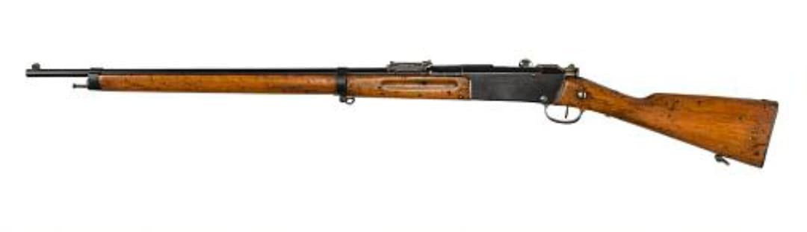
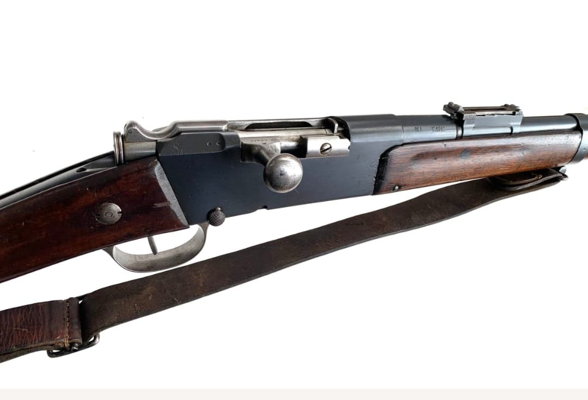

Les armes françaises de la Seconde Guerre mondiale représentent un ensemble varié de modèles issus de plusieurs décennies d’évolution. Entre modernisation rapide, héritage de la Grande Guerre et innovations techniques, l’armement français de 1915 à 1945 reflète une période complexe où coexistent équipements anciens et armes de conception récente.
Cette section du Musée HOP WW2 présente l’ensemble des armes blanches, fusils, pistolets, fusils-mitrailleurs, mitrailleuses et armes d’appui utilisées par les forces françaises durant le conflit. Chaque fiche offre une description détaillée, des photographies, et les éléments permettant d’identifier un modèle authentique.
Le fusil Lebel 1886 M93 est l’un des fusils les plus emblématiques de l’histoire militaire française. Premier fusil au monde à utiliser une munition à poudre sans fumée, il révolutionne l’armement en 1886 et reste en service durant toute la Première Guerre mondiale.
En 1939–1940, malgré son âge avancé, le Lebel équipe encore de nombreuses unités de réserve, territoriales, coloniales et certaines formations de seconde ligne. Sa robustesse et sa précision en font une arme toujours respectée.


Le Lebel est adopté en 1886 et devient le fusil standard de l’armée française durant la Première Guerre mondiale. Sa munition à poudre sans fumée marque une rupture technologique majeure dans l’histoire de l’armement.
Durant la Seconde Guerre mondiale, il reste utilisé dans les unités de réserve, les troupes coloniales et certaines formations territoriales. Bien que dépassé, il conserve une excellente précision et une grande robustesse.